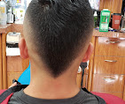
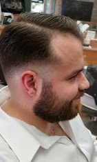
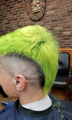
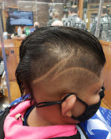
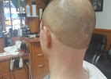
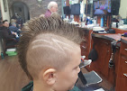
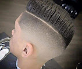
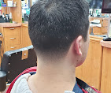

Haircuts
Tailored cuts with shape, balance, and a polished finish for daily confidence.

Barbershop New York | Best barber West Village
Serving West Village & New York City for over a decade with premium grooming and a neighborhood feel.
About G A Five Stars
For 10+ years, G A Five Stars Barbershop has delivered clean, confident looks for local regulars and first-time guests. Our team blends classic technique with modern style for every Men's haircut NYC clients ask for, from executive trims to street-sharp finishes.
Expect precision, consistency, and a friendly, professional atmosphere every time you sit in the chair.
Services
From quick cleanups to full grooming sessions, we offer detail-driven services for every style.
Tailored cuts with shape, balance, and a polished finish for daily confidence.
Smooth transitions and crisp detailing from low fades to high-contrast skin fades.
Defined lines and texture-enhanced results for clean, modern edge and flow.
Classic scissor work for natural movement, tailored layers, and precise control.
Clean, uniform cuts with exact guard work and shape-up options.
Relaxing prep, smooth razor finish, and barbershop tradition in every pass.
Gallery
Real cuts, real clients, real West Village energy.







Client Reviews
Chris Lally
"I've been going to this barbershop for over 10 years and the owner Alex is great! He is an experienced barber with a very friendly attitude. Between Alex and Vlad, both have cut mine and my son's hair, providing a professional haircut at a consistent barbershop!"
Tabber Benedict
"I've been going here since 2009. These gentlemen are efficient and old school, like me, when it comes to a classic haircut/barbershop experience. Thank you to Alex for always making me feel welcome, and thank God you are still around!"
Amir Coren
"Ben did an outstanding job with my fade-up cut. He paid attention to every detail, kept checking in to make sure I was happy with the length and shape, and delivered one of the cleanest, sharpest fades I've had in a long time. The blend is perfect, the lines are crisp, and he clearly takes pride in his work. Highly recommend Ben if you're looking for a professional, precise, and reliable barber."
david cassagnol
"Alex is amazing! His haircuts are always perfect and he couldn't be friendlier. Highly recommend this place!"
Andy Linder
"I've been coming to Vlad for 5 years - best haircut! Even after moving out of Chelsea / West Village I still come."
Contact
Address: 150 7th Ave S, New York, NY 10014, United States
Phone: +1 646-678-5478
Instagram: @gafivestarsbarbershop
Call now and get a premium barbershop experience in the heart of NYC.
Call +1 646-678-5478